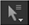

若要将空间变换应用于笔画、形状或组，可以使用 变换 标签。从 “描边/形状” 列表中选择一个描边/形状/组，然后调整:
• 翻译 -在 x 和 y 轴上移动笔触/形状。
• 旋转 -围绕枢轴点旋转笔画/形状。使用 中心 (或 Ctrl / Cmd 拖动变换插孔) 以定位枢轴点。
• 规模 -调整样条线的大小。使用 中心 (或 Ctrl / Cmd 拖动变换插孔) 以定位枢轴点。
• 倾斜 X -沿 X 轴从枢轴点倾斜笔触/形状的样条线。使用 中心 (或 Ctrl / Cmd 拖动变换插孔) 以定位枢轴点。
• 倾斜 Y -沿 Y 轴从枢轴点倾斜笔划/形状的样条线。使用 中心 (或 Ctrl / Cmd 拖动变换插孔) 以定位枢轴点。
• 斜阶 -设置其中的顺序 倾斜 X 和 倾斜 Y 应用:
• XY - 倾斜 X 在之前应用 倾斜 Y .
• YX - 倾斜 Y 在之前应用 倾斜 X .
• 中心 x，y -要设置旋转和缩放的中心，请调整中心 x 、 y 中的值。
• 额外矩阵 -输入您希望与上面的转换控件连接的值。有关连接的更多信息，请参见 节点连接方式 .
注意: 虽然你可以将矩阵拖到另一个节点的矩阵中，以便在其他地方轻松使用这些值，但是你不应该尝试，例如，在 3 乘 3 的矩阵中拖动 4 乘 4 的矩阵, 因为这样做可能会有意想不到的结果。
或者，您也可以使用变换句柄 (快捷方式 T ) 在查看器中转换元素。要变换整个描边/形状，需要使用变换手柄插孔，要变换描边/形状中的点，应该使用变换框。
变换处理出现的转换插座时, 变换 选项卡处于活动状态，当 RotoPaint 属性面板中的任何其他选项卡处于活动状态时，变换手柄将显示为框。
| 1。 | 单击其中一个选择工具 在 RotoPaint 工具栏中，使用 变换 标签活动。 |
| 2. | 确保 隐藏变换句柄 在 RotoPaint 工具设置中禁用。 |
| 3. | 通过在查看器中单击或在 “描边/形状” 列表中选择描边/形状来选择描边/形状。将出现一个变换句柄插孔。 |
| 4. | 使用千斤顶旋转、缩放或扭曲您的行程/形状。 |
| 1。 | 单击 选择全部 , 选择点 ,或 选择羽毛点  RotoPaint 工具栏中的工具 RotoPaint 标签活动。 |
| 2. | 确保 隐藏变换句柄 在 RotoPaint 工具设置中禁用。 |
| 3. | 在笔划/形状中选择点 转变 + 单击或通过单击并拖动要选择的点。将出现一个变换框。 |
| 4. | 使用该框旋转、缩放或倾斜您的描边/形状或点。 |
| 5. | 要使用变换框角销，请按 Ctrl / Cmd + 转变 并拖动变换框点以移动它们。 |
注意: 变换点会更改实际点位置，而变换整个描边/形状/组会更改应用于点位置的变换。
提示: 如果您想在移动选区时隐藏变换框，请启用 移动时隐藏变换控制柄 在 RotoPaint 工具设置中。这可能会更容易正确定位您的选择。
克隆或显示时，您可以使用 RotoPaint 工具设置上的洋葱皮肤控制来查看和转换前景顶部的源输入。如果您正在用单独的输入作为源绘制笔画/形状，您也可以使用洋葱蒙皮。要调整洋葱皮:
| 1。 | 选择您的笔触/形状工具后，请检查 洋葱 RotoPaint 工具设置中的框。 |
| 2. | 调整洋葱皮肤的不透明度，并通过在查看器中使用洋葱皮肤变换覆盖来变换源。 |
|
|
| 洋葱皮变换手柄。 |
|
|